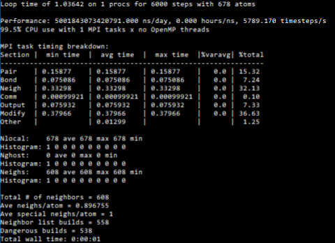

Installation¶
Installing a released version using pip.¶
The easiest way to install the package is to write in the command line:
pip install icenumerics
If this works, then you should run a sample simulation, as described in the Usage instructions. If the command line shows an output like the following, your installation was successful.
If you get an error, it means that your system can’t run the lammps binaries included in the simulation.
Todo
write specific instructions for lammps compilation and how to include the binaries on the package.
Installing in a conda virtual environment.¶
Conda’s virtual environments allow us to install the package in an isolated version of the python installation, in order to prevent conflicts. Since there is no conda installer for icenumerics, to install it in a virtual environment, first create it, install pip within it, and then install icenumerics. The pip installer knows to install packages to the environment itself was installed in.
Installing the latest version from github.¶
To clone the latest version from github write:
git clone --recurse-submodules https://github.com/aortiza/icenumerics.git
This will download both the icenumerics package and the magcolloids subpackage. Now you can either manualy place the package somewhere that python can find it, or you can use the setup.py scripts. To use the scripts you first need to install the magcolloids package. Go to the magcolloids directory (‘icenumericsicenumericsmagcolloids’) and run
python setup.py install
This will install the magcolloids package. Then go out to the icenumerics directory and run the same command. Test the installation as described above.
Install from github using pip¶
pip install git+git://github.com/aortiza/icenumerics@master